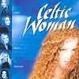

Celtic Lyrics Corner > Shows > Celtic Woman > Last Rose Of Summer
|  | Last Rose Of Summer |
| Credits : |
a) Last Rose Of Summer - traditional; arranged by David Downes
b) Walking In The Air - H. Blake |
| Appears On : | Celtic Woman (soundtrack) |
| Language : | English |
Lyrics :
Walking in the air
Floating the sky
Floating in the air
We're walking in the air
We're floating in the moonlit sky
The people far below are sleeping as we fly
We're holding very tight
I'm riding in the midnight blue
I'm finding I can fly so high above with you
All across the world
The villages go by like dreams
The rivers and the hills, the forests and the streams
Children gaze open-mouthed, taken by suprise
Nobody down below believes their eyes
We're surfing in the air
We're swimming in the frozen sky
We're drifting over icy mountains floating by
Suddenly swooping low on an ocean deep
Rousing up a mighty monster from his sleep
We're walking in the air
We're dancing in the midnight sky
And everyone who sees us greets us as we fly